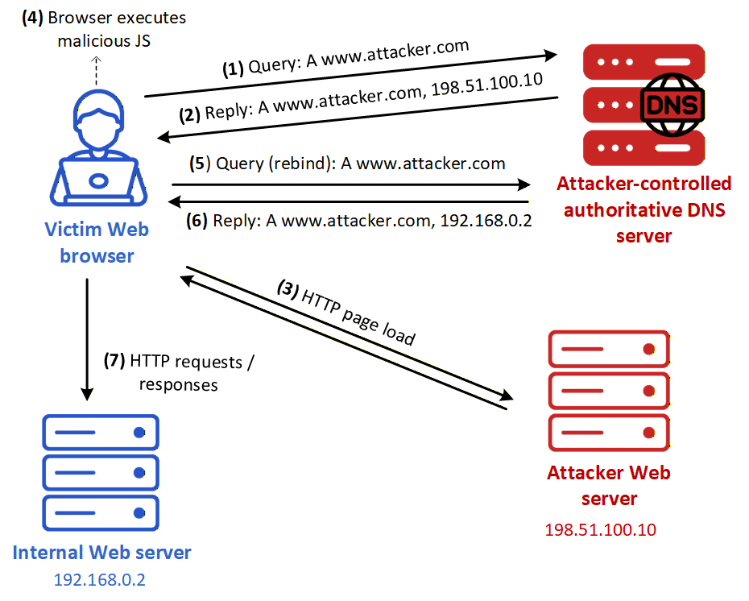
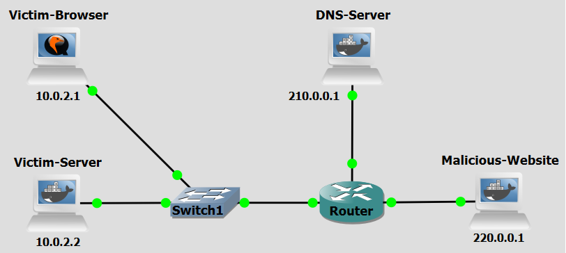

Background
DNS Rebinding is a technique that allows an attacker to bypass the same-origin policy in web browsers, enabling malicious scripts to interact with private network services as if they originated from within the trusted network. There are two primary ways to carry out the attack:
Client-side rebinding via a malicious website: In the most common form of the attack, the attacker tricks the victim into visiting a malicious website such as attacker.com, which the attacker controls. When the victim's browser loads the page, it performs a DNS lookup for attacker.com, and the attacker’s DNS server responds with an IP address pointing to an attacker-controlled web server on the internet. The browser loads malicious JavaScript from this server. Later, when the JavaScript makes another request to attacker.com, the attacker responds with a different IP address, for example, a private IP such as 192.168.0.2. Because the domain name remains the same, the browser still considers the request to be the same origin. This allows the malicious script to access internal network resources as if they were part of attacker.com, breaching the network’s perimeter defenses.
Rebinding via a compromised local DNS resolver: A more difficult but potentially more powerful variation of the attack involves the attacker gaining control of the DNS resolver used by the victim’s network — for example, through malware or misconfiguration. If the attacker controls the resolver, they can manipulate DNS responses without needing the victim to visit a malicious website. This allows for DNS rebinding attacks to be launched passively or on-demand, targeting devices inside the local network without user interaction.

Figure 1 illustrates a scenario based on "Client-side rebinding via a malicious website", in which the victim visits a malicious website controlled by the attacker (www.attacker.com). The victim also has a private web server on their local network that is normally inaccessible from the internet. The attacker, who has access to a compromised DNS Server, can control the DNS records for their domain and knows the private IP of the victim’s internal service, launches the attack as follows:
- Step 1: The victim’s browser sends a DNS query for www.attacker.com.
- Step 2: The attacker-controlled DNS server replies with the public IP address of the attacker’s web server, for example 198.51.100.10.
- Step 3: The browser retrieves the malicious web page from that server over HTTP.
- Step 4: The browser executes the malicious JavaScript contained in the page.
- Step 5: The script causes a new access to www.attacker.com, which leads the browser to perform another DNS lookup for the same hostname.
- Step 6: The attacker-controlled DNS server now returns the IP address of the target internal web server, for example 192.168.0.2.
- Step 7: The malicious script sends HTTP requests to that internal server. Because the browser still associates those requests with the hostname www.attacker.com, it may allow the interaction under the same-origin policy, thereby exposing the internal service to attacker-controlled requests.
Objectives
Our goal with the following configurations is to simulate a DNS Rebinding attack. This lab demonstrates how attackers use low-TTL DNS records and browser same-origin policy assumptions to pivot from a public-facing malicious website into a victim's private local network.
Lab Prerequisites & Network Configuration

In the GNS3 project showed in Figure 2, you will need to add in the following topology that uses four key nodes (be sure to previously check the Lab Setup Guide):
| Node Name | Role | IP Address | Subnet |
|---|---|---|---|
| Victim Browser | Target Browser | 10.0.2.1 | 10.0.2.0/24 |
| Victim Server | Target Webserver | 10.0.2.2 | 10.0.2.0/24 |
| DNS Server | DNS Server (BIND) | 210.0.0.1 | 210.0.0.0/24 |
| Malicious Website | Attacker Webserver | 220.0.0.1 | 220.0.0.0/24 |
The Victim Server, the Malicious Website, and DNS Server machines are implemented with Docker containers available at the Docker Hub. For the Victim Server install at GNS3 the container 0xdrogon/dns- rebinding-victim, for the Malicious Website install 0xdrogon/dns-rebinding-malware and for the DNS Server install 0xdrogon/dns-rebinding-bind9.
For the Victim Browser use the Ubuntu Desktop Guest appliance of GNS3 (22.04 version was the one used in this lab, includes Firefox). To log in, use credentials: Username: osboxes.org, Password: osboxes.org.
Phase 1: Setup
The DNS Server, Victim Server and Malicious Website machines are ready. Only the Victim Browser needs setup.
The DNS Server runs a Python script sniffer.py in the background that uses Scapy to listen for DNS requests to www.dnsrebindingmalware.com. When the victim makes the first request, it calls a bash script to change the name-to-IP mapping to the Victim Server (10.0.2.2) in the BIND 9 configuration files and, afterwards, it calls a second bash script to change the mapping back to the Malicious Website (220.0.0.1).
The Victim Server is a Python web server, victim.py, that changes the state of the lights at the
victim’s house. In the attack, the attacker gains access to the Victim Server and turns on all lights.
The Victim Server uses a simple form of authentication based on one-time passwords. The user must
first send a GET request to the /password endpoint, to obtain the password that must be included in
the POST request that turns on a specific light. This mechanism aims at defeating Cross-site request forgery (CSRF) attacks.
The Malicious Website runs a Python web server, malware.py, with a simple Web page that includes malicious JavaScript code. The JavaScript code uses the XMLHttpRequest object to make requests to the Victim Server that turn on all the lights in the victim’s house. The Web page also has a ten second countdown timer; the attack is only launched when the timer reaches zero. This countdown works as a waiting period to allow the change of name-to-IP mapping at the DNS Server. The malicious JavaScript code that is executed by the Victim Browser turns on all the lights in the victim’s house. To achieve that, it makes five requests to the /password endpoint, each followed by a request to the /lights endpoint.
Step 1.1: Victim Browser Configuration
On the Victim Browser machine:
-
Go to
Settings>Network>Wired>IPv4. There, fill in the IP address (10.0.2.1), netmask (255.255.255.0) and gateway (10.0.2.254), and DNS (210.0.0.1) fields. -
Check if you can change the lights by visiting:
You can check the state athttp://10.0.2.2http://10.0.2.2/lights. Leave them all turned off. -
Open Firefox browser, type
about:configon the URL field, and search fordnsCacheand change the value of the following entries:network. dnsCacheExpiration: 2 network. dnsCacheExpirationGracePeriod: 0 -
Disable the Firefox prefetching. Set to false the
network.prefetch-nextandnetwork.dns.disablePrefetchoptions. These settings are not required for the success of the attack but ease the interpretation of the DNS messages.
Phase 2: Attack Execution
Step 2.1: Start the Attack
Do a Wireshark capture at the connection between the Victim Browser and the switch, use the filter dns.qry.name contains "dnsrebindingmalware" or http.
On the Victim Browser, on the URL field, type:
www.dnsrebindingmalware.com
A window with title “DNS Rebinding Attack” must appear together with a countdown timer. The attack is performed when the countdown timer finishes, at that instant open a different tab on the same domain.
You should be able to access 10.0.2.2 through www.dnsrebindingmalware.com now. The switches should be all turned on, nut if not you can do it manually.
Go to http://10.0.2.2/lights to confirm if the attack really was sucessful.
Step 2.2: Repeat the attack
If the attack was not sucessful, which can happen, you can repeat the attack. Go to firefox's settings and remove all history, cache and site data. Note that the DNS Server must be restarted every time the experiment is repeated. As an alternative, access the auxiliary console of the DNS Server, and run:
python3 /var/dns-rebinding/sniffer.py 10.0.2.1
This way you can see if the sniffer script is working properly or not.
Question
Examine the Wireshark capture. How many DNS queries for www.dnsrebindingmalware.com do you observe, and what are the IP addresses returned in each response? What does the change in resolved IP address tell you about the rebinding mechanism?
Answer
You should observe at least two DNS queries for www.dnsrebindingmalware.com: First query: The DNS server responds with 220.0.0.1 — the IP of the Malicious Website. This is the initial resolution that allows the browser to load the attacker's web page and execute the malicious JavaScript; Second query (after ~10 seconds): The DNS server responds with 10.0.2.2 — the IP of the Victim Server on the private network. This is the rebind step: after the browser's short DNS cache (set to 2 seconds) expires and the countdown timer on the malicious page fires a new request to the same domain, the sniffer script on the DNS Server has already switched the DNS record to point to the internal host. The change in resolved IP is the core of the attack: the domain name stays the same (www.dnsrebindingmalware.com), so the browser considers both responses as belonging to the same origin. This tricks the browser into allowing the malicious JavaScript — loaded from the attacker's server — to make XMLHttpRequests directly to the private Victim Server, completely bypassing the Same-Origin Policy.
Countermeasure
After performing the attack, we now pass on to the countermeasure phase. To combat DNS Rebinding attacks, one of the most commonly used countermeasures in web browsers is DNS Pinning. This method ensures that the browser caches DNS resolutions for a predetermined period, regardless of the Time To Live (TTL) value specified by the DNS server. This is particularly effective against attackers who set extremely low TTL values for their malicious hostnames, as browsers will override these values with a default setting.
DNS Pinning
Step 1: Configuration
On the Victim Browser machine, inside Firefox type about:config on the URL field, and search for dnsCache and change the value of the following entries:
network. dnsCacheExpiration: 600
network. dnsCacheExpirationGracePeriod: 10
These values configure Firefox to cache DNS entries for 600 seconds (10 minutes) and to apply a 10-second grace period after expiration before discarding the entry entirely. Since modern browsers already apply DNS pinning techniques by default, this step restores Firefox to behavior closer to its production defaults — which were deliberately weakened at the start of Phase 1 to enable the attack to succeed.
Question
Why did we need to set dnsCacheExpiration to just 2 seconds at the beginning of the lab (Phase 1, Step 1.1)? What would have happened if we had left Firefox at its default caching duration of 600 seconds throughout the entire experiment?
Answer
The DNS Rebinding attack depends entirely on the victim's browser performing a second DNS lookup for www.dnsrebindingmalware.com after the DNS Server has switched the record to point to the Victim Server (10.0.2.2). This second lookup can only happen once the browser's DNS cache entry for the domain expires. With the default 600-second cache lifetime, the browser would have continued resolving www.dnsrebindingmalware.com to 220.0.0.1 (the attacker's server) for up to 10 minutes, even though the DNS Server had already changed the record. The malicious JavaScript's XMLHttpRequests would therefore continue going to the attacker's own server, not the private Victim Server, and the rebind would never occur.
Step 2: Re-run the attack.
Clear all browser history, cache, and site data in Firefox. Restart the DNS Server sniffer script as in Step 2.2. Then repeat the steps from Phase 2, Step 2.1 — navigate to www.dnsrebindingmalware.com and wait for the countdown to finish.
Be sure to also capture the network traffic as before.
Question
After applying the DNS Pinning countermeasure, was the attack successful? Examine the Wireshark capture. How does the DNS traffic differ from what you observed in Phase 2? What do you observe about the IP address returned for the second DNS query (if one occurs at all)?
Answer
With DNS Pinning enabled (600-second cache), the attack fails. The lights on the Victim Server should remain off after the countdown, and http://10.0.2.2/lights should confirm no state change occurred. In the Wireshark capture, you should observe a key difference in DNS behavior: First DNS query: As before, www.dnsrebindingmalware.com resolves to 220.0.0.1. The malicious page loads and the countdown timer begins; Second DNS query (after ~10 seconds): A second query may not appear at all, or if it does, Firefox ignores the new DNS response and continues using the originally cached IP (220.0.0.1). Because the DNS cache entry is pinned for 600 seconds, the browser does not accept the updated record pointing to 10.0.2.2. As a result, when the malicious JavaScript fires its XMLHttpRequests to www.dnsrebindingmalware.com, they are sent to the attacker's own server (220.0.0.1), not the Victim Server. The Same-Origin Policy is never bypassed with respect to the private network, so the /password and /lights endpoints of the Victim Server are never reached.
Conclusion
As we saw, after we configured DNS Pinning in the browser, the DNS Rebinding attack was effectively neutralized. By caching the initial DNS resolution for a longer period (600 seconds), Firefox prevented the browser from accepting the attacker's forged second DNS response that redirected the domain to the Victim Server's private IP address. This meant the malicious JavaScript could never establish a same-origin context with the internal service, and the /password and /lights endpoints of the Victim Server remained inaccessible from the attack page.
The Same-Origin Policy is designed to protect users, but it relies on the assumption that a domain name consistently maps to a single origin. DNS Rebinding exploits the moment when this assumption breaks down, when a domain's DNS record changes between requests. The attack is particularly dangerous because it requires no vulnerability in the target application itself since it abuses a legitimate browser mechanism.